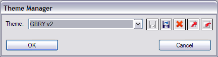

| About |
The Theme Manager is a component of emergeCore. It allows to save, and switch between, sets of different emerge Desktop settings.
| Configuration |
The Theme Manager is accessed by right-clicking on the desktop, clicking on Settings, and Theme Manager:
After selecting Theme Manager, the Theme Manager dialog box opens:

To switch to a different Theme, the user clicks on the arrow  , selects a Theme and clicks the OK button.
, selects a Theme and clicks the OK button.
Themes save:
the applets loaded (in Launch Applets dialog box),
the Desktop borders, menu opacity, etc. (all settings in emergeDesktop General tab),
the Styles of each applet (set in each applet's Style Editor tab),
the location and size of each loaded applet.
The above is saved in xml files in the User Profile folder under "\Application Data\Emerge Desktop\themes\", in a subfolder with the name of the Theme.
They don't save:
the RightClick and MiddleClick Desktop menus (set in emergeDesktop Menu Editor tab),
the aliases,
the emergeCommand history,
the shells added by the user,
the hotkeys,
the hidden icons in emergeTray,
the sticky items in emergeVWM.
The above is saved in xml files in the User Profile folder under "\Application Data\Emerge Desktop\files\".
After elements of a Theme have been changed, it can be saved by clicking on Save  , or saved under an new name by clicking on Save As
, or saved under an new name by clicking on Save As  .
When opening the Theme Manager, a reminder that the current Theme has been changed is that the name is followed by "(modified)", and then, if opening an other Theme, the user will be prompted to save the current one before the new one is opened.
.
When opening the Theme Manager, a reminder that the current Theme has been changed is that the name is followed by "(modified)", and then, if opening an other Theme, the user will be prompted to save the current one before the new one is opened.
A Theme can be Deleted  after highlighting it. Pressing the OK or the Cancel button closes the dialog box.
after highlighting it. Pressing the OK or the Cancel button closes the dialog box.
An emerge Desktop Theme can be exported as a zip file by clicking on Export , and a Theme can be imported to emerge Desktop (also in zip file format) by clicking on Import .
Themes are saved in folders which are located in the User Profile folder under "\Application Data\Emerge Desktop\themes" (see also Directory Structure)
| Usage |
To switch between Themes, the user opens the Theme Manager, selects another Theme and clicks on the OK button.